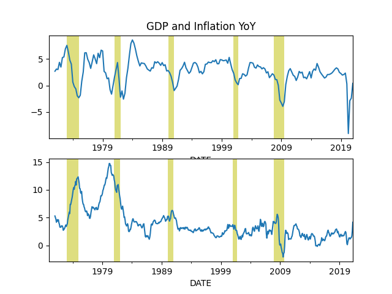

Week 20
Jacobin: "If nothing else, the COVID-19 pandemic has been an incredibly instructive case study in what the neoliberal dogma that now governs our waking lives really means when stripped of artifice or pretense. As things stand, just a handful of profit-driven private companies currently control the knowledge and expertise required to produce vaccines — with people in many poorer countries not expected to be vaccinated until at least 2024. It didn’t have to be this way, of course.
Enabled by a monopolistic global intellectual property (IP) regime and with a tip of the hat to billionaire Bill Gates, Big Pharma and its political allies have largely succeeded in controlling and defining the narrative during the early vaccine rollout — transforming the prospective solution to a global crisis into yet another occasion for narrow corporate profit, in this case at the expense of public health and a speedy end to the pandemic"
"@stephenburanyi
Reading some early pandemic takes and goddamn does this seem piped in from a completely separate reality now:
'Opinion | Bill Gates Is the Most Interesting Man in the World - nytimes.com'"
Jacobin: "Tony Blair Wants to Drag the Left Into His Own Political Grave... A decade after Blair’s departure from 10 Downing Street, 64 percent of people still had an unfavorable opinion of the man, with just 21 percent declaring their view to be positive.. His latest performance comes after a poor set of election results for the current Labour leader [his boy] Keir Starmer [in an essay] for the New Statesman"
The lead Arabic guy on True Lies is the most stretotype Arabic bad guy ever.. Cameron has him shoot AK in air and dude is like in a trance, it was comically overdone, makes u wanna go like "that mfker is bad, lets shoot the SOB!"
BBC went down hill compared to 10 yrs ago. They used to have great programs. That weekly discussion among journos on world events w that Gavin guy.. I dont see anything like that from BBC, at least not on Net. Plus they mucked up Dr Who it became fully cuck.. Massive loss of quality there.
"Government considers BBC shake-up after damning Diana report"
There needs to be accountability after covid. If the scenario I shared is correct, then, well.. Ok one person involved already got punished, Trump lost his job. But Fauci is still there.. The muckmuckers of CCP are still where they are..
Over three million are dead. HEADS NEED TO ROLL
The kid at the end is wrong BTW. His great great great great grandfather was never in Palestine, so could not have been kicked out by a Palestenians great great great great grandfather. His great great great great grandfather was like Madonna, became "interested" in the religion outside, because it was "something cool".. he was learning that, like Kabala meditation, along with spiritual Taibo while in Booty Bootcamp.
"@istanbultelaviv
39 years ago, Benjamin Netanyahu began his public career as a deputy ambassador in talks with a US administration that was negotiating ceasefires between Israel and the Palestinians. That was in 1982. He’s now prime minister and it’s 2021 but he’s essentially doing the same thing"
"@RegGBlinker
Big day in GDPR news today - Germany have issued an immediate enforceable order prohibiting @Facebook from processing personal data from @WhatsApp"
"@KenRoth
American diplomats reportedly 'will take a new look at the issue of Israeli settlements in the West Bank.' Good idea. They are war crimes (Art 49 of 4th Geneva Convention) and an integral part of the Israeli government's apartheid in the West Bank"
The protoganist of the witty ME stories, Nasreddin, can just easily be claimed by Iranianians as by TR.
Politico: "A wave of pandemic-era speculation in Bitcoin and new shell corporations known as SPACs is crashing, and Washington policymakers are scrambling to come to the rescue of investors.
After a year of letting markets run wild, lawmakers are calling for a crackdown amid concern that many small investors are about to be burned"
"@Grits4Breakfast
#HB1758 authorizing cops to use aerial drones for deadly force is up today in Senate Jurisprudence at the #txlege"
Did I hear that right? Russia plans green H2 production on the Arctic? #F24
Found this
Vox: "Why Covax, the fund to vaccinate the world, is struggling.. Covax wanted to send 2 billion doses worldwide this year. It's 3.4 percent of the way there"
"NPROXX and Cummins: the perfect match"
"@laborgiant
Europe is hilarious to me, there's like a different country 35 minutes down the road and everyone is like fucc those guys"
"@FCHEA_News
@IEA recommends increasing global investment in hydrogen from 1B to 40B dollars annually by 2030"
I'm talking truly hard limits.. e.g. if everyone in an apartment complex were charging their BEVs, at night, you end up blowing a fuse. No electric line setup going into even complexes can handle that kind of current.. So a major BEVtard argument is quashed -- they cannot use existing infra, they need brand new, expensive infra, for what is essentially an inferior solution.
There are hard limits on what electricity can deliver.
"On a normal February day, Texans need about 54,000 megawatts of electricity at peak demand. Early on that Monday morning [when statewide failures happened] we needed over 70,000 megawatts as heating our homes required more energy. When generators started going down"
Civil Rights Trump Quiet
ABC: "Israelis say we want quiet. Palestenians living under ISR military occupation say we want civil rights"
"@matthew_petti
It seems anti-Palestinianism is one of the most socially acceptable kinds of racism in America.
I don’t know of any other ethnic conflict where educated Americans are openly hostile towards an entire people…no one writes columns about how Kosovars or Tigrayans have it coming"
Hamas advanced weaponry..(!) These are $500 rockets shot towards a billion dollar defense system that can't hit a camel in the ass. The casualties as of now are 20 to 1.
"@SohrabAhmari
I never want to hear about Politifact. Ever. Never. Ever. I’m going to use these two screencaps if anyone ever cites that source"
The link suggests Einstein never dropped the variable speed of light idea.
1920: Die Ausbreitungsge-schwindigkeit des Lichtes mit dem Orte variiert
"Note that the speed of sound in air varies, the speed of sound in water varies, and the speed of seismic waves in rock varies. But it is said that the speed of light in space does not vary"
Modified gravity apprently can supplant the dark matter hypothesis but contradicts early universe theories? Well scientists have their early universe theories wrong anyway, so drop the necessity to co-exist with that junk, problem solved.
:) Arctic blast of the corp ac...
"[Some] workers .. would be happy to never again drag an extra sweater into the office to protect themselves against the arctic blast of the corporate air conditioner"
Mining itself is unnecessary, it's a technical kludge. See Nano.
The world needs green energy for actually productive things and there is major shortfall of it, and this person is like "let's use green energy for the most unproductive work ever, BTC mining"
Cathie "she gives me no" Wood [addressing Bitcoin's environmental damage concerns due to excessive use of energy for its mining] those issues can be addressed by using green energy". Beyond hilarious
— Katherine Clark (@RepKClark) May 20, 2021
UK: C-ALPS Targets Hydrogen FuelCell Opportunities with £2m New Lab Investment @covcampus University building a world-class hydrogen fuelcells development facility to support the UK’s bid to become an international leader
Amazon buying MGM? Can we have some more Stargate shows? Bezos saved The Expanse right? (I have no problem rich companies giving me better entertainment)
So much plastic waste.. I bet u go anywhere in the world today, to a deserted island even, and waste would find you. That Hanks character on Cast Away today would only have to wait until he collected enough plastic bottles by way of sea, then just McGyver a freaking super boat and just cruise outa there
WSJ: "Chile Elects Left-Leaning Assembly to Replace Dictatorship-Era Constitution"
📍 The South Australian Government is inviting national and international expressions of interest to develop land at Port Bonython in the Upper Spencer Gulf – one of our most prospective hydrogen export hubs. Read more here > https://t.co/V4G6j4XMTU pic.twitter.com/3erWdn9cFh
— DEM_sagov (@DEM_sagov) May 18, 2021
😶 😶 😶
"...every point on the evolute is a center of curvature of the evolvent"
Still against fracking, creates harm at the source that no tech can fix. Plus there is flaring, etc..
Im fine w blue, or gray H2, ammonia.. but green is preferred. My whole angle here is enticing fossil comps into clean fuel, and make up the H2 production shortfall if there are any.
"Graham Cooley
The letter, sent by the climate think tank E3G [to UK gov] and signed by Greenpeace, WWF and Friends of the Earth, urges the government to prioritise investment in #greenhydrogen over 'blue #hydrogen'"
On top of the mistakes made by TR founders, others' nationalisms forming in the region also helped in the bizarre identity formation.. Modern Greek nationalism for example call Ottocuck empire belonging to "Turks" and their time with it as "our dark 400 years". They claimed ownership of one piece of history, pushing other pieces, and its peoples the other way.. Others in the Balkans acted similarly. In reality Otto were just as bad as Byzantium, and both are Roman, which means all are corksuckers. Agrarian empires, i.e. organized crime, mafia in all but name.. Everyone suffers similarly, all are subjects. Anatolian peasant did not have an easy time bcz he was Moslem in a "Moslem empire".
TC must be like an Australian The Onion.
The Chaser: "Countries supplying Israel weapons wish there was some way to stop the ‘conflict’"
"@malsaafin
So among the people killed in yesterday's airstrikes on Gaza:
Gaza's top neurologist (Dr Mouin Al-Aloul)
The head of Coronavirus response at Gaza's biggest hospital (Dr Ayman Abu Al-Ouf)
Psychologist and social worker Rajaa Abu Al-Ouf (as well as her children)"
CPI YoY (inflation) increase for April 4.1%. Similar rise was seen during 2008/9 crisis, it went down. The knee-jerk con "gov spending" angle is not fully thought through

"@hazergroupltd
Under a government plan to become a carbon-neutral port by 2050, Japan’s Kobe port is looking into the use of hydrogen and ammonia"
Good news! We decided to start our own cryptocurrency. We will now pay all faculty salaries in our university currency, redeemable at the food court, bodega, and book store! Just wait until ucoin catches on!
— Associate Deans (@ass_deans) May 18, 2021
Haha "Australia was British empire's Guantanamo Bay"
What a piece of shit
Politico: "President Joe Biden wants to fund his $4.1 trillion infrastructure and family policy agenda with a huge pile of tax increases on corporations and the wealthy. The business community is dismissing the threat.
Corporate executives and lobbyists in Washington, New York and around the country say they are confident they can kill almost all of these tax hikes by pressuring moderate Democrats in the House and Senate"
"Air Liquide, an international industrial gas company, projects their new hydrogen plant in North Las Vegas will finish construction in November of this year. Although hydrogen production plants have been in existence for years, mostly for industrial and refinery purposes, Air Liquide’s plant will be the first of its kind to direct its hydrogen gas toward the transportation fuel market"
"Hydrogen-Powered BMW X5 Will Be Unveiled Next Year"
Translation: French news agency @AFP has decided to host @AP and @AJEnglish in its Gaza bureau, after theirs were destroyed by the Israeli military. https://t.co/lKfei7cv5F
— Philip Crowther (@PhilipinDC) May 16, 2021
"US climate envoy [Kerry] says people will not have to give up quality of life to achieve some of net zero goals"
Jacobin: "As an Occupier, Israel Has No Right to 'Self-Defense'..
'Israel has a right of self-defense'. This commonsense statement is repeated everywhere — by state officials and media outlets, by commentators and anchors. It seems so basic and self-evident that it is hard to argue with. But today Israel uses self-defense as its key rhetorical tool for war. By invoking self-defense, Israel changes the conversation from its colonial crimes against the Palestinians to the injuries it has itself incurred as a result. Yet it is precisely because Israel is denying Palestinians their human rights, including the right of self-determination, that it cannot claim self-defense as a legal justification for the use of force"
Burgis: "[T]he underlying phenomenon [of cancel culture] is real.... I don’t want the Left to eat itself, because I want us to win. If we’re going to get everyone health care and end police violence at home and imperialist wars abroad and expand democracy into the workplace, we need to learn to appeal to the broadest possible subset of the population. Far too many people whose material interests align with our program will find the face the Left often presents to the world deeply unappealing"
You could certainly make that case for fascism, communism, odd religious orders, or any -ism that failed, couldn't you? -isms fail when they are too far removed from reality and it takes too much effort to prop them up rather than throwing them out.
"If everyone believed X then it would be ok"
Sad.. Cabbie has his country's culture naturally, but someone told him bunch of other lies which he believed, and now gets bent all out of shape bcz of it.
It's funny.. historian gets kicked out of a cab bcz he said to a 'Turkish' cabbie that stuffed mussels are not Turkic in origin.. Obviously they are not, there are no mussels in bleeping Central Asia
Beers Ago - Toby Keith #music
Uhhh huhh huhh this sucks Beavis
Al Jazeera: "Israel’s doctrine: Humane bombing and benevolent occupation..
Israel and its enablers.. insist on its right of self-defence, when, in fact, Israel had forfeited that right by becoming an expanding occupying power. They say Israel only aims to defend its citizens, when in fact it is defending the occupation and the subjugation of the Palestinians. Israel insists it does not start wars. This is generally false, considering it started most of its past wars. It provoked war through assassinations, bombings, closures, evictions, land grabs, attacks on holy sites, and unrelenting illegal settlements, etc. The decades-long military and civilian occupation in and of itself is a continued state of war and violence"
"Climate-Friendly Neighborhood Electricity as @BoschGlobal Showcases Real-Life #FuelCells at Work in Bamberg.
First real-life operation of a stationary #fuelcell by Bosch"
CNN: "After Biden on Wednesday uttered the often-repeated mantra that Israel has a right to defend itself, liberals lashed out on the floor of the US House of Representatives. 'Do Palestinians have a right to survive?' asked New York Rep. Alexandria Ocasio-Cortez in a fiery speech on Thursday. The progressive Democrat continued to speak out on Twitter this weekend, writing, 'If the Biden admin can't stand up to an ally, who can it stand up to? How can they credibly claim to stand for human rights?' Michigan Rep. Rashida Tlaib responded on Saturday to the attack on the building housing international media...
'By continuing to provide military aid without restriction, we provide no incentive for Israel to adjust course,' Massachusetts Sen. Elizabeth Warren said in April, in remarks to the liberal pro-Israel group J Street. Sanders went further in the New York Times on Friday. 'In the Middle East, where we provide nearly $4 billion a year in aid to Israel, we can no longer be apologists for the right-wing Netanyahu government and its undemocratic and racist behavior'"
Al Jazeera: "In the beginning, the usual suspects from the left were the only Israelis who said it out loud. Next was the former minister of defence and chief of staff Moshe Yalon, who made the link between Prime Minister Benjamin Netanyahu's personal interests and the violent confrontation that started in East Jerusalem and spread to the Gaza strip, the occupied West Bank and Israel. 'The security escalation serves Netanyahu and Hamas, both for internal political reasons,' tweeted Yalon. Then even former defence minister and chairman of Yisrael Beitenu party Avigdor Lieberman declared that 'The strategic purpose of the [military] operation is to improve the public opinion of Netanyahu. As long as the mandate to form a government is with Lapid, Netanyahu will try to extend the operation.'
Indeed, the incumbent Israeli prime minister has not made any significant efforts to contain the violence. Last month, he could have ordered the police to remove the roadblocks from Damascus Gate in the old city of Jerusalem. Why did he wait until it became a battleground between the police and hundreds of young Palestinians' Why did he allow the police to throw stun grenades in Al-Aqsa mosque during prayer times?"
I watched Polar the other day man that guy had it rough
One cld just bring vitac pills of course, in today's trips
Interesting. Bcz cooking kills vitac? Cooking helps soften red meat obviously but if meat is soft already, as in Penguin meat, no problem, it wld work.
"Amundsen experienced his first merciless taste of winter in the Antarctic. Stuck onboard the Belgian expedition ship Belgica, which was grounded in pack ice, he and the rest of the crew contracted scurvy and faced certain death.That is when, according to a new book published later this month, Amundsen started eating raw penguin meat and discovered a secret that would later give him a huge advantage over Captain Robert Falcon Scott in the race to the south pole. 'If you eat almost any kind of meat, as long as it's raw enough, you can get the vitamin C that the body requires to avoid scurvy,' said Julian Sancton, author of the forthcoming book, Madhouse at the End of the Earth.This was the great insight, he said, of the Belgica's American doctor, Frederick Cook. He had spent time among the Inuit and observed that although their diet consisted largely of fresh game, they didn't get scurvy"
So this is how its done.. elect body who drafts constitution..
Punta la Tegra.. Where art thou?
DW: "Chileans elect body to rewrite Pinochet-era constitution.. The weekend poll to pick delegates to revise Chile's dictatorship-era constitution was a core demand of fatal protests in 2019 over social inequality"
Phy classes cld teach this stuff. Much to improve there
"[In a computer game] I want to block the door with something heavy [blocking rotation] .. Is that too much to ask?.. [Th]e person stopping me is actually the programmer behind the game’s physics engine, because at the heart of each of these tasks lies an angular effect. Few games today try even to model angular effects, let alone try to get them right.
The main reason for the lack of support for angular (you might call them rotational) effects in today’s games is that programmers perceive angular physics to be difficult to understand and implement. High-school physics courses (where we all learned F=ma) usually don’t cover [them], and it’s not immediately clear how to translate a force applied to an object into a spin for that object"
Palestanians do not live in some foreign country who is in control of their borders, electricity, money or anything a state is responsible for. Therefore whoever is control of all that, is responsible for their well-being.
... among other external actors. Palestanians are internal to Israel, their abuse is a human rights, ISR internal democracy issue.
"But your Suez/Ike share suggests Israel must be US' ME policy centerpiece"
"Florida man jumps off airplane falls on the alligator who wakes up and bites him, only to get his prosthetic leg", then, ok..
This doesn't do anything for me.. We expect more from the Florida man
"Florida man wrestles alligator to save pet dog"
F24: "Israel's police chief has accused MP Itamar Ben Gvir of adding fuel to the fire in Jerusalem and of being partly responsible for the violent demonstrations that have reignited the fuse of the Israeli-Palestinian conflict"
"istanbultelaviv
These organized groups are being also led by the Jewish supremacist, MP Itamar Ben-Gvir, who is currently on his way to Lod with hundreds of supporters... The police cannot block him.. Just a few nights ago, they burnt down Arab businesses"
"Rashida Tlaib: 'End the Apartheid System'... If we are to make good on our promises to support equal human rights for all, it is our duty to end the apartheid system that for decades has subjected Palestinians to inhumane treatment and racism"
WSJ: "Israel's Turmoil Hands Political Lifeline to Embattled Prime Minister"
"MSNBC's @AliVelshi: 'Palestinians are at best third-class citizens in the nation of their birth. The idea that it's even remotely controversial to call what Israel has imposed on Palestinians a form of apartheid is laughable'"
"Chileans choose assembly to draft a new constitution.. The face of a new Chile begins taking shape this weekend as the South American country elects 155 people to draft a constitution to replace one that drafted under a military dictatorship"
Jacobin: "Last month, Washington State passed a capital gains tax aimed at the state's ultra-wealthy. The tax is historic because Washington, despite its progressive reputation, until now had the worst tax code in the nation when it comes to fairness, behind Texas, Florida, and South Dakota"
well said
"The physics simulation is also what makes a game world feel solid—it puts the 'there' there, if you know what I mean"
Some pages are several MB in size.. nobody optimizes this stuff anymore? No wonder monkeys need 5G
Wrote little browser tool w bs4 to filter out all visual elements of
a page leaving the plain text behind. Great for low bandwidth
browsing. Intermittency. Raw content over presentation. Da thing
Despite the general centrist, establishment stance not sure CNN is overly fond of Israel.. One reporter had a very public spat there years back. I think the whole Netanyahu shtick, the Sheldon Adelson connection, right-wing fuckery is a bit too much, even for them.
@istanbultelaviv was on CNN
Dupe the intl press, then destroy the AP building.. The coverage can turn negative after this one..
NYT: "A spokesman led the international media to believe that Israeli forces had entered Gaza. They hadn't. But the army wanted Hamas to think they had.. The intent, the media reports said, was to dupe Hamas fighters into thinking that an invasion had begun and to respond in ways that would expose far greater numbers of them to what was being called a devastatingly lethal Israeli attack.... [MSM...] had mistakenly reported a ground invasion early Friday [asked] whether they had been turned into accessories to the military, why it had taken hours for the invasion report to be reversed, and how they would be able to trust the military's statements going forward"
Al Jazeera: "Are social platforms deliberately silencing Palestinians?"
But seriously this is good news
Devastating!
"Facebook faces 'devastating' EU-to-US data transfer ban.. The social media giant failed to block a bid that could ban it from sending data about its European users to the US"
@PowerHouseEG has good waste plastic to H2 conversion technology.
"@SolarisBusCoach Starts Delivery of Hydrogen Buses to Italian City Of Bolzano"
"@istanbultelaviv
The Minister of Public Security Amir Ohana, together w/Netanyahu, is responsible for the total breakdown of security. Had he instructed the police force to act differently in Jerusalem during Ramadan, it is hard to imagine we'd be where we are today. That is the truth"
"In 1949, a Polish Holocaust survivor named Genya Kowalski was offered a Palestinian house in Haifa. She refused, saying: 'I don’t want to live [in a house] of people who were thrown out...a human being is a human being.' We can be her heirs today" via @samseder
Jacobin: "Biden administration’s economic experts have been spotlighting the basic facts showing that the economy is functioning normally and private-sector pay has not unsustainably spiked. In fact, average hourly earnings increased from March to April by less than the rise in the consumer price index — which suggests there is less of a worker shortage, and more a shortage of employers willing to increase pay even a little bit. For his part, President Joe Biden has thankfully shed his past Reagan-appeasing habits and has avoided echoing his own old 'welfare queen' language. But ... his rhetoric is now starting to subtly shift from calling out GOP bullshit to trying to accommodate it"